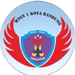

OSIS
Organisasi Siswa Intra Sekolah
PMR
Palang Merah Remaja
BASKARA
Barisan Siswa Kibar Bendera

PASKATIONE
Pramuka MTsN 1 Kota Bandung
Organisasi Siswa Intra Sekolah
Palang Merah Remaja
Barisan Siswa Kibar Bendera
Pramuka MTsN 1 Kota Bandung